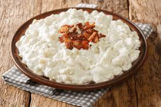

This is a Slovak national dish consisting of potato dumplings (halušky) mixed with a creamy, salty sheep's milk cheese (bryndza) and typically topped with crispy fried bacon bits. The dish is a hearty and savory comfort food, with the tangy cheese coating the soft, doughy dumplings and the bacon adding a smoky, salty crunch.